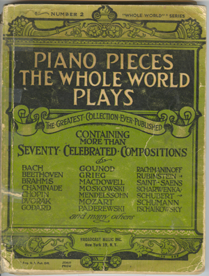
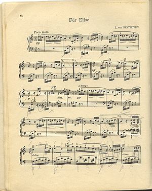

Playing Piano
Parvin started taking piano lessons after her marriage and coming back from China to Iran. As I remember, she played pieces by Beethoven, List, Ketelby, and specially Chopin, which she liked much.

